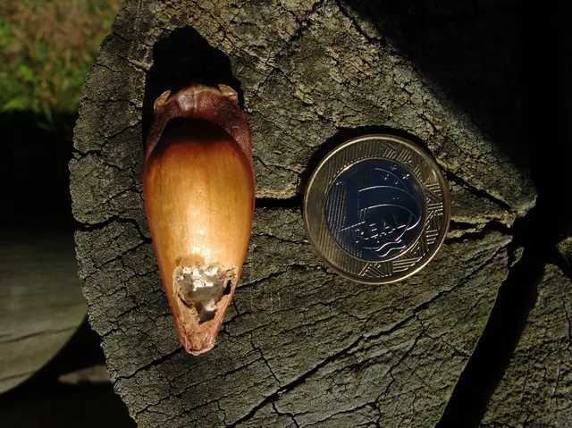

Sobre
Contabilidade com a luz acesa
Lume é uma palavra antiga para luz. A ideia é simples: você ver o que acontece com a sua empresa.

Pinhão, semente da araucária, ao lado de uma moeda de R$ 1. Foto: Adrian198cm, domínio público
A marca
Uma árvore de Curitiba e uma lamparina
A araucária é a árvore símbolo do Paraná e aparece no topo do site. O ponto amarelo é a luz: ele anda na barra do topo conforme você rola a página.
Como trabalhamos
Quatro combinados
Português, não contabilês
Cada termo difícil vem com uma frase que explica. Se não ficar claro, a pergunta é bem-vinda.
Avisar antes de vencer
Guia atrasada vira multa. Por isso o aviso sai antes, não no dia.
Um contador responsável
Você não conta a história da empresa de novo a cada mensagem.
Preço que cabe numa linha
O valor do plano é o que está na tabela. O imposto fica separado e visível.
Horários e canais
Quando e como falar com a gente
WhatsApp, e-mail e vídeo em horário comercial. Reunião presencial com hora marcada, em Curitiba.
Atendimento
Segunda a sexta, das 8h às 18h. Resposta no WhatsApp em até 2 horas úteis.
Aviso de portfólio
Esta marca é de exemplo
A Lume Contábil não existe. Por isso este site não mostra equipe, clientes, depoimentos nem números de resultado: nada disso seria verdade. Os preços e contatos também são de exemplo. As regras de imposto do simulador seguem as tabelas públicas do Simples Nacional.
Trocar de contador leva uma semana.
Uma chamada de 20 minutos. A gente fala com o contador antigo por você.